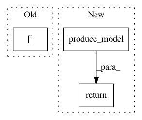

ae9083442dea9f4d318b261a58ee527daaf8dce1,autokeras/graph.py,Graph,to_add_skip_model,#Graph#Any#Any#,82
Before Change
self._add_node(0)
new_node_id = self.node_to_id[0]
layer = WeightedAdd()
single_input_shape = get_int_tuple(self.adj_list[output_id][0][1].input_shape)
layer.build([single_input_shape, single_input_shape])
self._add_edge(layer, new_node_id, self.adj_list[output_id][0][0], False)
self._add_edge(layer, input_id, self.adj_list[output_id][0][0], False)
After Change
self._add_edge(layer, input_id, self.adj_list[output_id][0][0], False)
self._redirect_edge(output_id, self.adj_list[output_id][0][0], new_node_id)
return self.produce_model()
def _redirect_edge(self, u_id, v_id, new_v_id):
layer_id = None
for index, edge_tuple in enumerate(self.adj_list[u_id]):
In pattern: SUPERPATTERN
Frequency: 4
Non-data size: 3
Instances
Project Name: keras-team/autokeras
Commit Name: ae9083442dea9f4d318b261a58ee527daaf8dce1
Time: 2018-01-01
Author: jhfjhfj1@gmail.com
File Name: autokeras/graph.py
Class Name: Graph
Method Name: to_add_skip_model
Project Name: jhfjhfj1/autokeras
Commit Name: 074d16ac217b9cddc04d093d019c61e393522eb5
Time: 2017-12-30
Author: jhfjhfj1@gmail.com
File Name: autokeras/net_transformer.py
Class Name:
Method Name: copy_conv_model